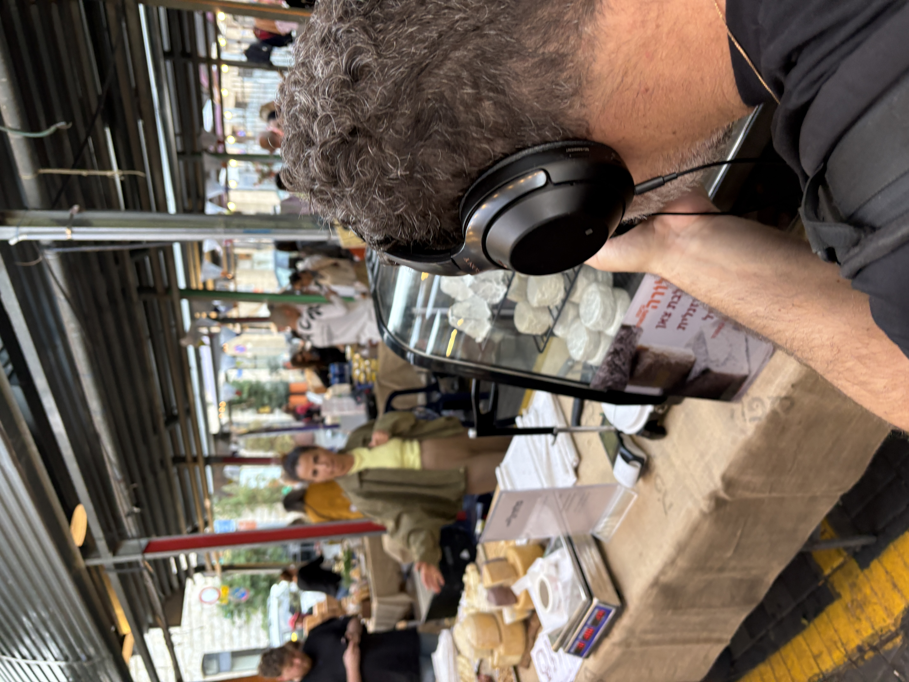

מיקה פודר הביאה אותי למגרש המשחקים הביתי שלה — שדרות ירושלים ביפו. לא כל יפו, הבהירה, רק מאה שנה של שדרות ירושלים. ביפו עצמה יש ארבעת אלפים שנה, אבל בסדרות אפשר יותר להתמקד.
מיקה סיפרה שהשדרה עברה תקופות. מהעות'מאנים עם בתי קפה ונרגילות, דרך האנגלים, ועד לעלייה גדולה של יהודים מהבלקן. ואז הבולגרים שדרגו לבת ים ולחולון, יפו נשארה נטושה, והרכבת הקלה נתנה את המכה האחרונה. אבל מיקה לא מאמינה שנגמר הסיפור.
נכנסנו לסופרה, מסעדה ערבית ביתית. סופרה זה בערבית לפתוח שולחן וארוחה, משהו חברתי. פתחי, הבעלים, סיפר שפתח את המקום לאשתו ז'יאן, שמבשלת כל החיים ויש לה חמישה ילדים. הכל מהידיים שלה — ממולאים שהם עבודה של לילה, ואחר כך שלוש שעות בבוקר.

סופרה
פתחי וז'יאן · מסעדה ערבית ביתית · שדרות ירושלים
שאלתי אם יש משהו יפואי במטבח. פתחי אמר שיש מנה שנקראת סמט, מרק קודשים ממטריות רחבות. מאז הפיגוע בסדרות, שאלתי, עדיין מגיעים יהודים? כן, ברור, ענה. בהתחלה זה משפיע ליומיים, אחר כך רגיל. אנשים צריכים לאכול בסוף.
הגישו לנו מסחרן — ממולא בעוף עם סומק, עטוף בלחם דרוזי. ואז הפכו מולנו סיר ענק של מקלובה. אם אני הייתי עושה את זה, הכל היה מתפזר. אבל כאן — מושלם. לקחתי צלחת עם קצת מהכל: חצילים, תפוחי אדמה, חריף.
"מאז הפיגוע? כן, ברור מגיעים. בהתחלה זה משפיע ליומיים, אבל אחרי זה רגיל. אנשים צריכים לאכול בסוף."
— פתחי, סופרה format_quote
פתחי היה בצום רמדאן ואני אכלתי מולו. הרגשתי לא נעים. הוא אמר שזה בסדר, הוא נהנה לראות אותי אוכל. ואז סיפר על אישה שהתקשרה ואמרה שהאוכל שלו מזכיר לה את אמא שנפטרה, ושהיא באה לעשות יום הולדת אצלו.
"התקשרה אליי אישה ואמרה: האוכל שלך מזכיר לנו את אמא שנפטרה. ובאנו לעשות את יום ההולדת שלה אצלך."
— פתחי, סופרהמקלובה ב-49 שקלים, אמרתי למיקה. לא רע בכלל. יצאנו וצעדנו על הסדרה לכיוון דרום, בין עצים וצל והרכבת הקלה.
מיקה הסבירה שהרכבת הרגה את השדרה מבחינה עסקית. אוטובוסים היו עוצרים כל שבעים מטר, אנשים יורדים, קונים. ברכבת — שתי תחנות לכל שדרות ירושלים. ואז הקורונה, ואז המלחמה, ואז הפיגוע.
המעדנייה של אבנר היא פצפונת. נכנסים פנימה ומרגישים שנות שמונים בקטע טוב — עסק צפוף עם המון דברים, ובעל בית שמכיר את כל הלקוחות. אבנר, 72 נשמה, ביפו 41 שנה. הוא סידר לנו שולחן קטן בחוץ עם כל המיטב: עגבניות חמוצות, לוטניצה, אבטיח כבוש, תרד, כרובית ושלושה סוגי גבינה.

המעדנייה של אבנר
אבנר · 41 שנה · מעדנייה בולגרית
טעמתי את העגבניות הכבושות — חמוץ עם כל הלב. ואז את האבטיח הכבוש, שהוא ממש אבטיח בטעם של מלפפון חמוץ. משונה מאוד, אבל מעניין. שאלתי מה הכי טעים. העגבנייה, עניתי בלי היסוס.
אבנר לא אוהב את הרכבת. אמר שפעם ביום חמישי היו רשים של אנשים על המדרכה, והיום לא רואים ארבעה. מבחינת ביזנס, הרכבת הרגה את השדרה. אבל הוא ממשיך. שאלתי אם עוד יש לו כוח. אני נהנה מזה, ענה. וכשאתה נהנה, אתה יכול להגיע גם בגיל שמונים.
"אני נהנה מזה. וכשאתה נהנה, אתה יכול להגיע גם בגיל שמונים. אם אתה לא נהנה — אל תעשה."
— אבנר, המעדנייה format_quote
יצאנו מהמעדנייה של פעם ונכנסנו למעדנייה של היום — הרשלה, שני צעדים משם.
צביקה, הבעלים, גבר גדול ומזוקן עם חיוך ענק, הסביר שהיה לו מבשלת בירה בבאר שבע שבע עשרה שנה, ואז עבר לחמוצים ולהסות. הגיע ליפו בגלל הזדמנות עסקית — שיפוץ הרכבת גרם לחנויות להתפנות. פתח שולחן טעימות בחוץ: ליקר ארטישוק, ליקר תמרים, ליקר קומקוואט, ממרחים וריבות.
הרשלה
צביקה · מעדנייה חדשה · חמוצים והסות · שדרות ירושלים
טעמתי את הקומקוואט — תפוז סיני שאף אחד לא יודע מה לעשות איתו. מסתבר שאפשר לעשות ליקר נהדר. ואז סנדוויץ' — וואו, סוף הדרך. צביקה אמר: תהנה מלה דולצ'ה ויטה, החיים הטובים. זה העיקרון שלנו.
"תהנה מלה דולצ'ה ויטה, החיים הטובים. זה העיקרון שלנו."
— צביקה, הרשלה format_quote
מיקה סיכמה: היינו בעולמות שונים לחלוטין על רחוב אחד. כל כך כיף לשבת וליהנות מהרחוב הזה, וכל כך חבל שאין עוד אנשים שעושים את זה. ברגע שמגיעים לפה פעם אחת ומגלים את הפנינות — אין סיבה שלא לחזור.